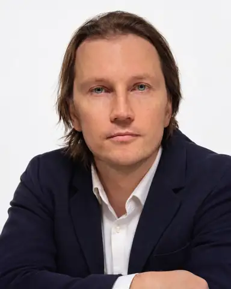

Lev Vtiurin
Founder · More than 20 years of legal practice
Our founder, Lev Vtiurin, has been practising law since 2005. His experience includes civil and commercial disputes, corporate matters, investment projects and migration law. Our Moscow-based practice coordinates with specialists in the regions where a matter requires local support.
How we work
We begin by establishing the facts, assessing the legal options and identifying risks. Only then do we agree the strategy, scope and implementation. Where needed, we coordinate the work of translators, notaries and other independent specialists.
A boutique legal practice
The founder personally participates in complex legal matters and strategy. We favour careful, individual work over a mass-market approach.
Book a consultation →